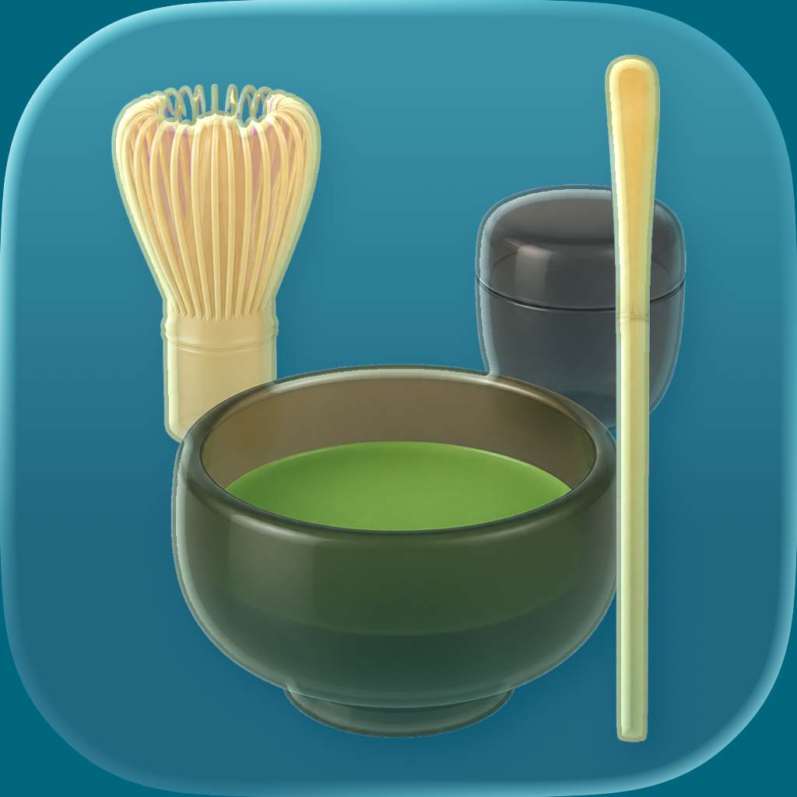

ご銘は？
プライバシーポリシー
制定日：2026年7月22日
1. 運営者
DEEPSEA K.K.（以下「当社」）は、iPhone・Androidアプリ「ご銘は？〜茶道 茶杓の銘早見表」（以下「本アプリ」）を提供します。
2. 収集する情報
本アプリは、氏名、メールアドレス、端末識別子、位置情報、連絡先、写真、音声、閲覧履歴、広告識別子その他の個人情報または利用状況を収集・送信しません。アカウント登録、広告、アクセス解析、行動追跡もありません。
3. 端末内に保存する情報
お気に入りにした銘と初回案内の確認状態を、利用者の端末内だけに保存します。当社のサーバーへ送信されません。お気に入りはアプリ内で解除でき、すべての保存情報は本アプリを削除することで消去できます。
4. 外部サイトへのリンク
参考資料、サポート、プライバシーポリシーのリンクを開く場合、端末のブラウザーで外部Webサイトへ移動します。移動先での情報の取り扱いは、各サイトのプライバシーポリシーに従います。本アプリは、移動後の閲覧情報を受け取りません。
5. 第三者提供・データ保持
本アプリは情報を収集しないため、第三者への提供、販売、共有、サーバー上での保持は行いません。
6. 子どものプライバシー
本アプリは年齢を問わず利用できますが、子どもを含む利用者から個人情報を意図的に収集することはありません。
7. ポリシーの変更
本アプリの機能や法令等の変更に応じて本ポリシーを改定する場合があります。重要な変更がある場合は、本ページまたはアプリ内でお知らせします。